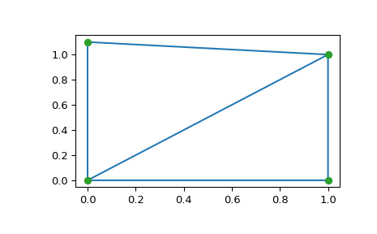

scipy.spatial.Delaunay¶
-
class
scipy.spatial.Delaunay(points, furthest_site=False, incremental=False, qhull_options=None)¶ Delaunay tessellation in N dimensions.
New in version 0.9.
- Parameters
- pointsndarray of floats, shape (npoints, ndim)
Coordinates of points to triangulate
- furthest_sitebool, optional
Whether to compute a furthest-site Delaunay triangulation. Default: False
New in version 0.12.0.
- incrementalbool, optional
Allow adding new points incrementally. This takes up some additional resources.
- qhull_optionsstr, optional
Additional options to pass to Qhull. See Qhull manual for details. Option “Qt” is always enabled. Default:”Qbb Qc Qz Qx Q12” for ndim > 4 and “Qbb Qc Qz Q12” otherwise. Incremental mode omits “Qz”.
New in version 0.12.0.
- Raises
- QhullError
Raised when Qhull encounters an error condition, such as geometrical degeneracy when options to resolve are not enabled.
- ValueError
Raised if an incompatible array is given as input.
Notes
The tessellation is computed using the Qhull library Qhull library.
Note
Unless you pass in the Qhull option “QJ”, Qhull does not guarantee that each input point appears as a vertex in the Delaunay triangulation. Omitted points are listed in the coplanar attribute.
Examples
Triangulation of a set of points:
>>> points = np.array([[0, 0], [0, 1.1], [1, 0], [1, 1]]) >>> from scipy.spatial import Delaunay >>> tri = Delaunay(points)
We can plot it:
>>> import matplotlib.pyplot as plt >>> plt.triplot(points[:,0], points[:,1], tri.simplices) >>> plt.plot(points[:,0], points[:,1], 'o') >>> plt.show()
Point indices and coordinates for the two triangles forming the triangulation:
>>> tri.simplices array([[2, 3, 0], # may vary [3, 1, 0]], dtype=int32)
Note that depending on how rounding errors go, the simplices may be in a different order than above.
>>> points[tri.simplices] array([[[ 1. , 0. ], # may vary [ 1. , 1. ], [ 0. , 0. ]], [[ 1. , 1. ], [ 0. , 1.1], [ 0. , 0. ]]])
Triangle 0 is the only neighbor of triangle 1, and it’s opposite to vertex 1 of triangle 1:
>>> tri.neighbors[1] array([-1, 0, -1], dtype=int32) >>> points[tri.simplices[1,1]] array([ 0. , 1.1])
We can find out which triangle points are in:
>>> p = np.array([(0.1, 0.2), (1.5, 0.5), (0.5, 1.05)]) >>> tri.find_simplex(p) array([ 1, -1, 1], dtype=int32)
The returned integers in the array are the indices of the simplex the corresponding point is in. If -1 is returned, the point is in no simplex. Be aware that the shortcut in the following example only works corretcly for valid points as invalid points result in -1 which is itself a valid index for the last simplex in the list.
>>> p_valids = np.array([(0.1, 0.2), (0.5, 1.05)]) >>> tri.simplices[tri.find_simplex(p_valids)] array([[3, 1, 0], # may vary [3, 1, 0]], dtype=int32)
We can also compute barycentric coordinates in triangle 1 for these points:
>>> b = tri.transform[1,:2].dot(np.transpose(p - tri.transform[1,2])) >>> np.c_[np.transpose(b), 1 - b.sum(axis=0)] array([[ 0.1 , 0.09090909, 0.80909091], [ 1.5 , -0.90909091, 0.40909091], [ 0.5 , 0.5 , 0. ]])
The coordinates for the first point are all positive, meaning it is indeed inside the triangle. The third point is on a vertex, hence its null third coordinate.
- Attributes
- pointsndarray of double, shape (npoints, ndim)
Coordinates of input points.
- simplicesndarray of ints, shape (nsimplex, ndim+1)
Indices of the points forming the simplices in the triangulation. For 2-D, the points are oriented counterclockwise.
- neighborsndarray of ints, shape (nsimplex, ndim+1)
Indices of neighbor simplices for each simplex. The kth neighbor is opposite to the kth vertex. For simplices at the boundary, -1 denotes no neighbor.
- equationsndarray of double, shape (nsimplex, ndim+2)
[normal, offset] forming the hyperplane equation of the facet on the paraboloid (see Qhull documentation for more).
- paraboloid_scale, paraboloid_shiftfloat
Scale and shift for the extra paraboloid dimension (see Qhull documentation for more).
transformndarray of double, shape (nsimplex, ndim+1, ndim)Affine transform from
xto the barycentric coordinatesc.vertex_to_simplexndarray of int, shape (npoints,)Lookup array, from a vertex, to some simplex which it is a part of.
convex_hullndarray of int, shape (nfaces, ndim)Vertices of facets forming the convex hull of the point set.
- coplanarndarray of int, shape (ncoplanar, 3)
Indices of coplanar points and the corresponding indices of the nearest facet and the nearest vertex. Coplanar points are input points which were not included in the triangulation due to numerical precision issues.
If option “Qc” is not specified, this list is not computed.
New in version 0.12.0.
- vertices
Same as simplices, but deprecated.
vertex_neighbor_verticestuple of two ndarrays of int; (indptr, indices)Neighboring vertices of vertices.
- furthest_site
True if this was a furthest site triangulation and False if not.
New in version 1.4.0.
Methods
add_points(points[, restart])Process a set of additional new points.
close()Finish incremental processing.
find_simplex(self, xi[, bruteforce, tol])Find the simplices containing the given points.
lift_points(self, x)Lift points to the Qhull paraboloid.
plane_distance(self, xi)Compute hyperplane distances to the point xi from all simplices.